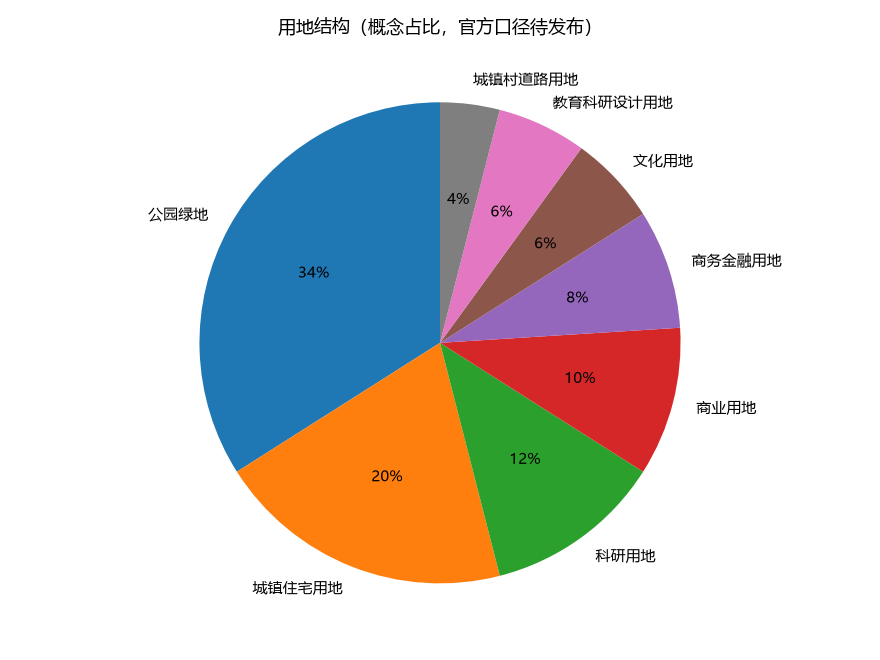
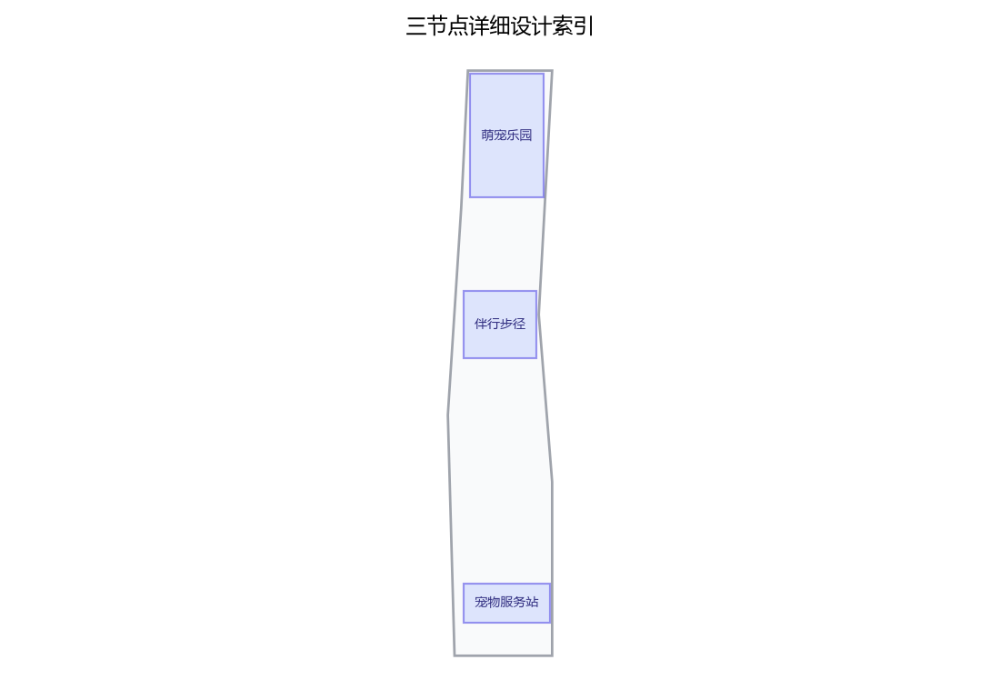
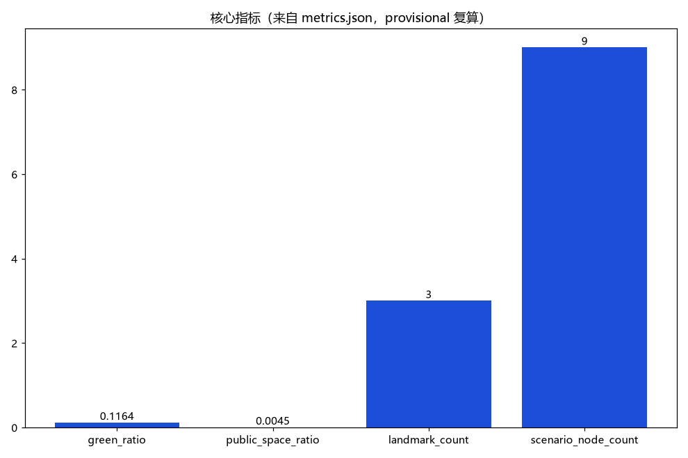

萌伴智环：宠物友好公共空间与文明养宠网络（概念）
以「萌伴智环（PET·JZ · 宠物友好公共空间与文明养宠网络）」构建沿京张AI创新带的宠物友好专项概念（对应公开任务书公共空间体验维度、全龄友好生活维度与社区治理维度）：以「一园一径一站」组织宠物友好空间与服务网络，「萌宠乐园」为集中遛宠与社交场地（众智园侧：分犬型活动区、宠物饮水与冲洗点、粪便收集设施）、「伴行步径」为绿带内的宠物友好慢行路径（AI原点社区侧：分时遛宠时段、牵绳提示与避让标识、宠物饮水驿站）、「宠物服务站」为犬证登记、疫苗提醒、走失协助与领养信息驿站（大钟寺侧：与社区服务站点复合），三节点沿京张绿带组织连续的宠物友好服务动线；五类AI+场景（犬只登记提醒AI、走失协助AI、场地分时调度AI、粪便问题上报AI、养宠知识问答AI）仅处理匿名聚合数据、关键决策人工复核、禁止过度监控（不进行个体识别式追踪）；要素机制均为概念建议：文明养宠公约、分时遛宠许可、宠物登记与疫苗提醒、宠物友好商户联盟、居民养宠议事；对标案例（纽约与伦敦宠物公园公开实践、新加坡宠物友好公共空间公开经验、东京遛狗地图与犬籍登记公开做法、国内宠物友好商场与公园公开试点方向）仅按公开渠道信息概述；交通慢行优先、蓝绿空间低干预融合布置，三项formal核心指标（site_area_sqm、green_ratio、public_space_ratio）以本包几何复算、面积以官方文本口径为底，分期实施+年度复算与公示计划。全部为概念建议、参考方案，不给出容积率、建筑高度、具体拆改留、宠物数量、登记量、投资测算或工程实施结论，不编造任何官方数据、登记量、宠物数量或政策承诺，不把设想写成已确定安排，基于 provisional 边界，官方数据发布后复算。
一园、一径、一站，串成一条把文明养宠写进日常的环线。
"萌伴智环 PET·JZ"（英文名方向：PET·JZ / Smart Companion Loop）以萌宠乐园、伴行步径、宠物服务站三个概念节点与五类AI+场景，构成呼应百年京张AI创新带"公共空间体验、全龄友好生活、社区治理"三个维度的宠物友好公共空间与文明养宠网络。本稿全部内容为开放共创的概念建议、参考方案，不替代正式规划，不构成政府审定结论；所有面积与指标以 provisional 临时几何为前提，官方数据发布后触发复算。
设计依据与资料清单
主控依据依次为公开任务书摘录、投稿技能与参考样例，以及公开渠道收集的对标城市实践概述。任务书摘录确定三大定位、五大功能、三区两翼、六项智能体任务、共创章程与禁止性清单；投稿技能确定提案结构、概念建议属性与合规边界；参考样例提供章节组织与"不越界表述"的范本。资料清单包括：任务书摘录（SRC-2026-0518-AGENT-OPEN-CALL-TASKBOOK）、投稿技能文件、参考样例提案、公开渠道对标概述（纽约与伦敦宠物公园及遛犬场地、新加坡宠物友好公共空间、东京遛犬地图与犬籍登记、国内宠物友好商场与公园试点方向）。对标内容仅概述方法方向，不复制其图样、数据或表述细节，不构成任何官方承诺。
资料缺口同步声明：仓库尚无官方总体边界与重点区几何，本稿面积与指标均为 provisional 临时几何下的低置信度设计模型值，官方边界与数据发布后触发复算；容积率、建筑高度等依赖未公开官方控制条件的指标保持 unknown，不给数值。
证据锚点：来源、来源（组织方公告与任务书为文本口径依据）。
三层范围工作框架
三层范围以"问题—空间—运营—证据—复算"责任链贯通。统筹研究范围回答宠物友好如何成为一带公共价值：将养宠需求转化为全龄友好生活与服务新业态场景，接入三区两翼协同回路。总体设计范围回答在哪里落地：沿京张绿带公共空间体系布置"一园一径一站"概念网络，以伴行慢行联系衔接。重点区域范围回答每个节点怎么运营：萌宠乐园、伴行步径、宠物服务站分别落在众智园侧、AI原点社区侧与大钟寺侧，配套要素机制与AI+场景。
三区两翼映射为概念分工：众智园加速区承载乐园场景与AI养护小模型验证；AI原点社区承载步径日常体验；大钟寺产业集聚区承载服务站与新业态接口；小月河场景赋能翼接纳"AI+养宠"场景开放与测试；中关村科技服务翼提供算力、数据与要素配置机制。本框架为概念组织，不属于法定分区、控规或工程结论；provisional 边界下的面积与指标仅作设计模型值，待官方数据发布后复算。
证据锚点：来源（三层范围划分依据任务书官方文本口径）。
统筹研究范围产业与未来城市研究
未来城市的检验尺度之一是人与宠物能否共处公共空间。统筹研究将养宠议题作为公共空间体验、全龄友好生活与社区治理三者的接缝：一面是养犬家庭、养宠老年人、带娃家长与不养宠居民的日常摩擦与安全顾虑，一面是宠物服务、消费与数字化场景的产业机会。大钟寺侧可探索宠物服务业态接口，众智园侧可验证AI养护场景，AI原点社区侧沉淀日常运营样本；两翼提供算力、数据与场景开放机制。上述均为机制建议，不构成产业招商、投资或政策承诺。
对标案例仅按公开渠道概述：纽约与伦敦公开实践显示，为公园划定遛犬专用区、实施分时与牵绳规则可减少人宠冲突；新加坡公开经验包括在公园划定宠物活动区域并明确牵绳与清理要求；东京公开做法包括发布遛犬地图与犬籍登记服务流程提示；国内公开试点方向包括宠物友好商场与公园的倡导性分区，均属公开信息层面的方法借鉴，不编造细节、不搬用其数据与尺度。
要素机制概念包括文明养宠公约、分时遛宠许可、宠物登记与疫苗提醒、宠物友好商户联盟、居民养宠议事；养宠管理立足依法登记、牵绳与疫苗要求、粪便清理责任、居民意见通道与人宠矛盾化解机制。
证据锚点：来源（边界为 provisional，研究范围仅作概念示意）。
总体设计范围城市更新与控规深度城市设计
总体设计沿京张绿带公共空间体系组织"一园一径一站"概念环线，利用绿带缝合东西、贯通南北的开放结构设置宠物友好节点与慢行联系；全部为可移位、可替换的概念结构，不是道路红线、地块或工程定位。三节点坚持存量优先、轻介入、可逆组件方向：萌宠乐园利用绿带边侧场地，伴行步径利用既有慢行绿带，宠物服务站复合社区服务点，均不提出建筑指标与开发强度。控规深度以"问题—空间对象—指标—资料缺口—复算路径"表达：每处节点写清解决的问题、空间对象、对应指标、待补资料与官方数据到位后的复算触发条件；容积率、建筑高度、拆除量保持 unknown，不以概念方案替代控规审批。
空间设计由治理机制牵引：依法登记、牵绳与疫苗要求、粪便清理责任、居民意见通道与人宠矛盾化解机制必须能在节点空间与运营安排中兑现，避免"只建场地、不管秩序"。provisional 边界仅用于设计模型表达，官方边界发布后全部复算。


证据锚点：来源、来源。
重点区域详细设计
三处节点均从功能构成、空间组织与公共体验界面三个层面描述，全部为概念建议，供专业团队深化研究。
萌宠乐园（众智园侧——集中遛宠与社会化场地）
功能：分犬型活动区（按大、中、小型犬分区概念）、宠物饮水与冲洗点、粪便收集设施、休憩观察区，兼作犬只社会化训练场地。空间：以绿篱与缓冲绿带围合，减弱声光对周边干扰；人行动线与犬活动线分离，设置双门缓冲与无障碍通路。公共体验界面：观察座椅、文明养宠公约与牵绳提示牌、自助饮水与冲洗设施、密闭粪便收集设施；夜间仅作安全照度，不作装饰性亮化。
伴行步径（AI原点社区侧——绿带内宠物友好慢行路径）
功能：分时遛宠时段、牵绳提示与避让标识、沿途宠物饮水驿站，与无宠慢行共享绿带。空间：与既有慢行系统并行共线，通过时段划分与标识系统实现人犬共存，断面与路权不作工程判断。公共体验界面：时段告示、避让示意、驿站坐憩与饮水、沿途粪便收集点，标识兼顾大字与触觉信息。
宠物服务站（大钟寺侧——犬证登记、疫苗提醒、走失协助与领养信息驿站）
功能：犬证登记指引、疫苗与年检提醒、走失信息协助、领养信息发布，与社区服务站点复合设置。空间：社区服务点内设专用窗口、信息公开栏与意见箱，保留纸本、电话等非数字通道。公共体验界面：人工服务与领养信息墙、"登记仅用于服务履约"的公示说明、居民意见通道；不设置任何个体识别式追踪装置。

证据锚点：空间数据（三节点示意多边形来自本包 geometry/key_areas.geojson）。
AI 创新生态、人才画像与 AI+ 场景
AI创新生态以"小模型、后场辅助、匿名聚合、人工复核"为边界：五类AI+场景只生成提醒、草稿、分类与聚合提示，不作出公共决定，不直接控制场地设备，可随时撤除。犬只登记数据仅用于服务履约（疫苗与年检提醒），不用于个体画像；全部场景仅匿名聚合，不做个体识别式追踪。
不少于五类用户画像：养犬家庭（安全遛犬与社交，落点乐园、步径、服务站）；不养宠居民（避免干扰冲突，落点步径与周边绿地，诉求走匿名通道）；养宠老年人（偏好非数字服务，驿站与服务站人工为主，AI仅后场辅助）；带娃家长（儿童安全与卫生，乐园观察区与步径）；宠物行业从业者（服务培训场地，乐园与商户联盟）；另有社区工作者（秩序维护与矛盾调解，服务站与居民议事）。
五类AI+场景卡要点均为概念：犬只登记提醒AI——疫苗年检到期提醒，登记仅服务履约、不做个体画像，落点服务站，人工复核，出现追踪或画像即停；走失协助AI——匿名聚合走失与寻回公告、生成匹配提示草稿，不做图像个体识别，落点服务站，发布前人工核实；场地分时调度AI——依分时遛宠时段生成时间表草稿，不自动控制门禁照明，落点乐园与步径，时段由议事与公约决定；粪便问题上报AI——上传去标识分类、生成清洁工单草稿，不记录位置轨迹，落点步径与乐园，人工确认派单；养宠知识问答AI——依据批准语料生成问答草稿，落点服务站与商户联盟，法律行政判断由人完成。
场景与空间运营映射：萌宠乐园承接分时调度、粪便上报与社交活动；伴行步径承接分时调度、粪便上报与避让提示；宠物服务站承接登记提醒、走失协助与知识问答；商户联盟承接知识问答与文明商户公示；居民议事承接公约修订与矛盾化解。所有场景均为概念测试方向。
证据锚点：来源（AI 生成内容治理表述的参照依据）。
用地、建筑规模与拆改留方案
用地表达采用公共空间、绿地与公共服务设施的概念分区方向，不改变法定用地性质；萌宠乐园与伴行步径落在既有绿带及边侧场地方向，宠物服务站复合社区服务点，均不涉及新增建设用地判断，也不触碰文保、绿地与蓝线约束。建筑方面不给规模结论：服务站为概念包络，仅说明功能复合与窗口化服务，不给出基底面积、层数、建筑高度或容积率；驿站类设施按轻量、可逆、装配式组件方向描述，不构成建筑面积承诺。拆改留执行"现状与权益核查—保留优先—轻适修配—移位或删除"概念四步：先核实现状、权属与安全条件，能保留则不拆改，确需适配时采用可逆轻改造，冲突无法解决时移位或删除概念部件；未开展调查与官方边界确认前，不提出任何具体拆除面积、拆除量或保留清单。容积率、建筑高度、拆除量均保持 unknown，注明等待官方控规、测绘与建筑调查资料。
证据锚点：来源（用地分类名称参照现行国标口径）。
交通、轨道、市政与公共服务设施
交通：伴行步径作为概念性慢行支线，与京张绿带既有慢行系统、社区步行圈和无障碍通道衔接，通过分时遛宠与人犬避让标识实现共享，不给断面、路权或交叉口工程结论。轨道与步行圈关系：宠物服务站以轨道站点与社区步行圈的可达性为概念选址原则（大钟寺区域已设轨道交通站点接驳属公开信息），不涉及任何线路、线位或站点工程判断。市政为概念示意层级：饮水驿站与冲洗点的给水、排水（含宠物冲洗废水去向方向）仅作概念示意并说明接口要求，不给水量、能耗或工程量结论；粪便收集采用密闭收集容器与清运服务衔接的概念方向，具体管养由专业团队深化。公共服务：犬证登记指引、疫苗提醒须与主管部门既有服务流程衔接（概念），服务站配置人工、纸本、电话等价通道，防止数字鸿沟。所有设施以"有资产编号、有维护责任、可停用复开"为运营前提，本段不构成任何工程方案。
证据锚点：来源（市政与慢行设计表述的方法参照）。
蓝绿空间、公共空间与城市风貌
蓝绿体系以既有绿带为骨架，"一园一径一站"作为绿地内的公共空间组件嵌入，优先做遮阴、坐憩、饮水、标识与粪便收集等耐久可修部件，延续铁路遗产与学院社区的低眩光、朴素尺度风貌；不设霓虹或电子大屏依赖，不搞网红化地标。宠物饮水、冲洗与粪便收集设施均按可移动、可替换组件概念设计，避免对既有绿化和树冠造成不可逆影响。
三项 formal 核心视觉指标与面积复算：site_area_sqm、green_ratio、public_space_ratio 由投稿方提供的 site_boundary、green_space、public_space 几何在 EPSG:4548 投影下复算得出；当前几何为 provisional 临时边界（official_boundary=false、geometry_role=provisional_constraint），指标值为低置信度的临时设计模型值，仅用于设计模型表达；官方边界、绿地与公共空间范围正式发布后，必须按同一公式触发复算并同步更新指标与视觉页面数值。容积率、建筑高度等依赖未公开官方控制条件的指标保持 unknown、value null。
公共空间体系同时承担文明养宠治理界面：分时时段、牵绳提示、清理责任、意见通道与矛盾化解机制以实体标识与人工服务落实。

证据锚点：来源（蓝绿空间组织的方法参照）。
更新项目清单、实施政策与分期计划
三类更新项目清单均为概念项目：一、乐园场地——萌宠乐园（分犬型活动区、饮水冲洗、粪便收集、观察座区）；二、伴行路径——伴行步径与驿站（分时遛宠、避让标识、饮水驿站）；三、服务站点——宠物服务站（登记指引、疫苗提醒、走失协助、领养信息，复合社区服务点）。
分期计划为概念节奏：近期（1-3年）机制先行——文明养宠公约、分时遛宠许可、居民养宠议事试点，宠物服务站复合社区服务点并开通登记与提醒服务；中期（3-5年）完善乐园与步径，分犬型活动区与饮水冲洗设施到位，AI+养宠场景进入后场小范围验证；远期（5-10年）形成环线网络与长效运营，按年度评估对设施与AI工具作保留、修改或移除。分期不含投资测算、审批结论或已确定安排，仅为供专业团队深化研究的参考节奏。实施政策强调依法登记、牵绳与疫苗要求、粪便清理责任、居民意见通道与人宠矛盾化解机制的可运营化，不把设想活动写成已确定安排。
证据锚点：来源（分期与实施条目对应任务书要求）。
指标体系、面积复算与合规矩阵
指标体系分三类：可从提交几何复算的 provisional known 指标、依赖官方控制的 unknown 指标、需运营后设定的绩效阈值。三项 formal 核心指标公式：site_area_sqm = 场地边界几何投影面积（EPSG:4548）；green_ratio = 绿地几何面积 ÷ 场地面积；public_space_ratio = 公共空间几何面积 ÷ 场地面积。当前均为低置信度临时设计模型值，标注 provisional 来源与公式；官方边界及绿地、公共空间数据发布后触发强制复算，复算结果须同步到指标文件与视觉页面数值。
| 指标 | 状态 | 当前处理与复算触发 |
|---|---|---|
| site_area_sqm | provisional known（低置信度） | 临时边界几何复算；官方边界发布后复算 |
| green_ratio | provisional known（低置信度） | 绿地几何 ÷ 场地面积；官方绿地范围发布后复算 |
| public_space_ratio | provisional known（低置信度） | 公共空间几何 ÷ 场地面积；官方范围发布后复算 |
| 容积率、建筑高度等 | unknown（value null） | 依赖未公开官方控制条件，注明原因 |
合规矩阵对接任务书"公共空间体验、全龄友好生活、社区治理"三个维度与 agent.1-6 任务覆盖声明，逐条映射禁止性清单：不给出容积率、建筑高度、具体拆改留或工程实施结论；不编造宠物数量、登记量与政策承诺；不把设想活动写成已确定安排；AI场景仅匿名聚合，登记仅用于服务履约，不进行个体识别式追踪。

证据锚点：指标、指标、来源。
风险、版权与合规说明
主要风险：临时边界被误读为法定红线、AI辅助漂移为监控、动物福利与人宠矛盾处置缺位、运营与维护责任不明。对应控制：所有面积与指标标注 provisional 并声明官方数据发布后复算；登记数据仅用于服务履约，AI场景仅匿名聚合，不进行个体识别式追踪，默认不做人脸识别、位置轨迹与个体画像，投诉、人工复核与撤除机制在试点前落实；人宠矛盾通过居民养宠议事与意见通道化解，涉及犬只安全问题时启动人工处置流程。
版权与合规：本稿文字与表格为参与方与AI协作原创，未使用未经授权的商标、图片、字体或版权材料描述；对标案例仅概述公开渠道信息并注明"公开概述、不编造细节"，不复制其图样与数据。全部内容为开放共创的建议性参考方案，不替代正式规划，不构成政府审定、批准、实施安排或任何承诺；正式实施前须由专业团队结合官方边界、权属、文保、市政与运营条件深化复核。
证据锚点：来源（征集规则为权属与合规表述的依据）。
参考资料
| 类别 | 内容与用途 |
|---|---|
| 任务书 | 公开任务书摘录（三大定位、五大功能、三区两翼、agent.1-6、禁止性清单）——架构与合规依据 |
| 投稿技能 | urban-design-ai-submission 技能——概念建议属性、结构与边界要求 |
| 参考样例 | 007xf 提案——章节组织与边界表述范本 |
| 对标案例 | 纽约与伦敦宠物公园及遛犬场地公开实践（方法借鉴，公开概述） |
| 对标案例 | 新加坡宠物友好公共空间公开经验（方法借鉴，公开概述） |
| 对标案例 | 东京遛犬地图与犬籍登记公开做法（方法借鉴，公开概述） |
| 对标案例 | 国内宠物友好商场与公园公开试点方向（方法借鉴，公开概述） |
| 几何 | provisional 临时边界（official_boundary=false）——设计模型值来源，官方数据发布后触发复算 |
| 待补资料 | 官方总体边界与重点区几何、控规、绿地与公共空间范围、权属与管养资料 |
完整机器索引（来源、指标、合规矩阵、设计深度矩阵与自检记录）按投稿技能要求另行登记；正式深化前必须补齐官方边界、权属、地形、建筑与管线调查、文保控制、控规、交通与运营资料。
证据锚点：来源（本清单首条即组织方公开资料包）。